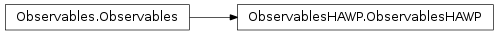
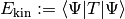
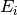
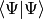
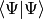
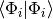
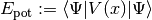
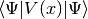

ObservablesHAWP¶
About the ObservablesHAWP class¶
The WaveBlocks Project
@author: R. Bourquin @copyright: Copyright (C) 2010, 2011, 2012, 2013, 2014 R. Bourquin @license: Modified BSD License
Inheritance diagram¶

Class documentation¶
- class WaveBlocksND.ObservablesHAWP(innerproduct=None)¶
This class implements observable computation for Hagedorn wavepackets
 .
.- kinetic_energy(wavepacket, component=None, summed=False)¶
Compute the kinetic energy  of the different components
 of the wavepacket .
of the wavepacket .Parameters: - wavepacket (A HagedornWavepacketBase subclass instance.) – The wavepacket of which we compute the kinetic energy.
- component (Integer or None.) – The index
 of the component whose
kinetic energy we want to compute. If set to None the
computation is performed for all
of the component whose
kinetic energy we want to compute. If set to None the
computation is performed for all  components.
components. - summed (Boolean, default is False.) – Whether to sum up the kinetic energies  of the individual
components .
Returns: A list with the kinetic energies of the individual components or the overall kinetic energy of the wavepacket. (Depending on the optional arguments.)
- wavepacket (A HagedornWavepacketBase subclass instance.) – The wavepacket
- norm(wavepacket, component=None, summed=False)¶
Calculate the
 norm  of the wavepacket .
norm  of the wavepacket .Note
This method is just a shortcut and calls the HagedornWavepacketBase.norm() method of the given wavepacket.
Parameters: - wavepacket (A HagedornWavepacketBase subclass instance.) – The wavepacket of which we compute the norm.
- component (int or None.) – The index of the component whose norm is calculated.
The default value is None which means to compute the norms of all components.
- summed (Boolean, default is False.) – Whether to sum up the norms  of the
individual components .
Returns: The norm of
or the norm of or a list with the
norms of all components. Depending on the values of component and summed.- wavepacket (A HagedornWavepacketBase subclass instance.) – The wavepacket
- potential_energy(wavepacket, potential, component=None, summed=False)¶
Compute the potential energy  of the different components
of the wavepacket .Parameters: - wavepacket (A HagedornWavepacketBase subclass instance.) – The wavepacket of which we compute the potential energy.
- potential – The potential
 . (Actually, not the potential object itself
but one of its V.evaluate_* methods.)
. (Actually, not the potential object itself
but one of its V.evaluate_* methods.) - component (Integer or None.) – The index of the component whose
potential energy we want to compute. If set to None the
computation is performed for all components.
- summed (Boolean, default is False.) – Whether to sum up the potential energies of the individual
components .
Returns: A list with the potential energies of the individual components or the overall potential energy of the wavepacket. (Depending on the optional arguments.)
- wavepacket (A HagedornWavepacketBase subclass instance.) – The wavepacket
- set_innerproduct(innerproduct)¶
Set the innerproduct.
Parameters: innerproduct (A InnerProduct subclass instance.) – An innerproduct for computing the integrals. The inner product is only used for the computation of the potential energy  but not for the kinetic energy.